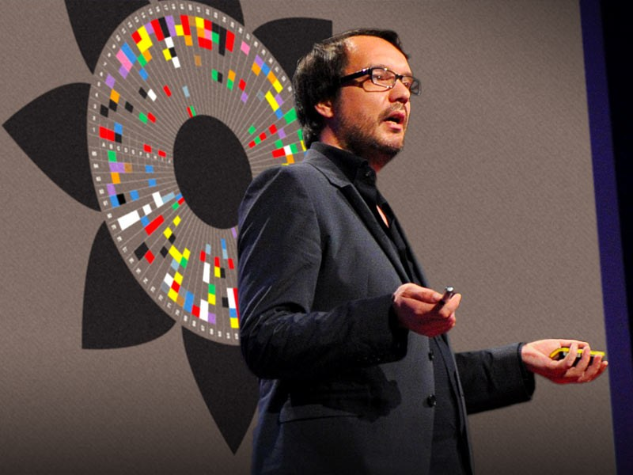

Chartjunk debate

Совершенство достигнуто не тогда, когда нечего добавить, а тогда, когда нечего отнять
| Аскетизм | Визуальная привлекательность | |
| Edward TufteStephen Few | Nigel HolmesDavid McCandless |
|
Alberto Cairo [chartjunk eye-candy problem] |
||